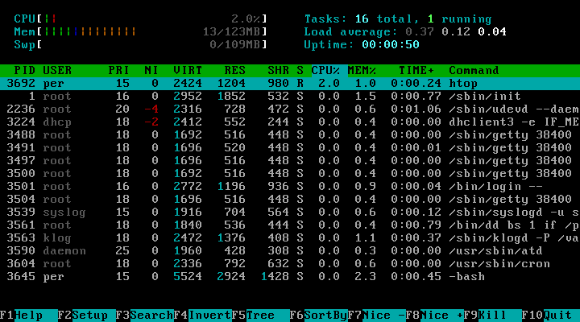
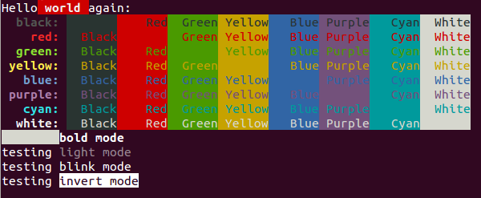

/*questão 1: Estrutura basica de Html*/
/* Questão 10: Meta tags */
Cores no Terminal com C e ANSI
/*Questão 8: Ancoras para navegação interna*/
/*Questão 2: os cabeçalhos estao por toda pagina*/
Estilizando o Terminal com Códigos ANSI em C
Seja bem-vindo ao guia definitivo de formatação de terminal! Se você programa em C e está cansado daquela tela preta com letras brancas padronizadas, os Escape Codes ANSI são a solução perfeita para trazer cores e vida aos seus projetos.
Por que usar Códigos ANSI?
/*Questão 3: Lista não ordenada e ordenada*/
Eles não exigem instalação de bibliotecas externas complexas.
Funcionam diretamente na função printf padrão da linguagem C.
Permitem destacar mensagens de erro em vermelho para facilitar o debug.
Ajudam a criar menus interativos muito mais atraentes.
São suportados nativamente pela imensa maioria dos terminais modernos (Linux, macOS e Windows).
Implementando no seu Código
Abra o seu ambiente de desenvolvimento (IDE) ou editor de texto.
Inclua a biblioteca padrão de entrada e saída: #include <stdio.h>.
Defina o código da cor desejada como uma macro ou string (ex: "\033[32m" para verde).
Imprima o código da cor imediatamente antes do texto no seu printf.
Sempre imprima o código de "Reset" ("\033[0m") no final para a cor não vazar para o resto do terminal.
Principais Códigos e Seus Efeitos
/*Questão 6: tabela de Códigos ANSI*/
Cor / Estilo
Código ANSI
Exemplo de Uso em C
Vermelho (Texto)
\033[31m
printf("\033[31m Falha Crítica \033[0m");
Verde (Texto)
\033[32m
printf("\033[32m Compilado com Sucesso! \033[0m");
Fundo Azul
\033[44m
printf("\033[44m Tela Azul \033[0m");
Demonstrações Visuais e Auditivas
/*Questão 5: Imagens com a tag alt */


/*Questão 9: video e audio*/
Ficou com alguma dúvida sobre C ou ANSI?
/*Questão 7: Formulario */
/*Questão 4: links para pagina interna e externa*/